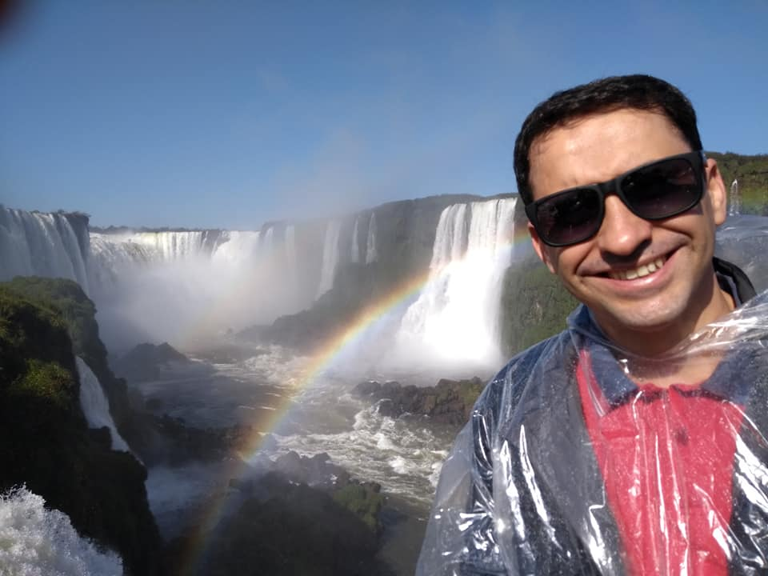
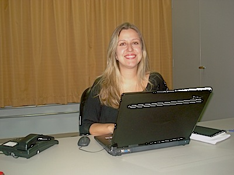
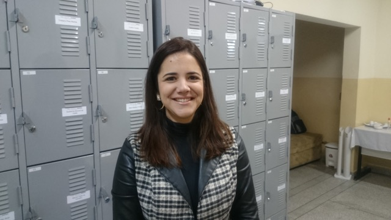
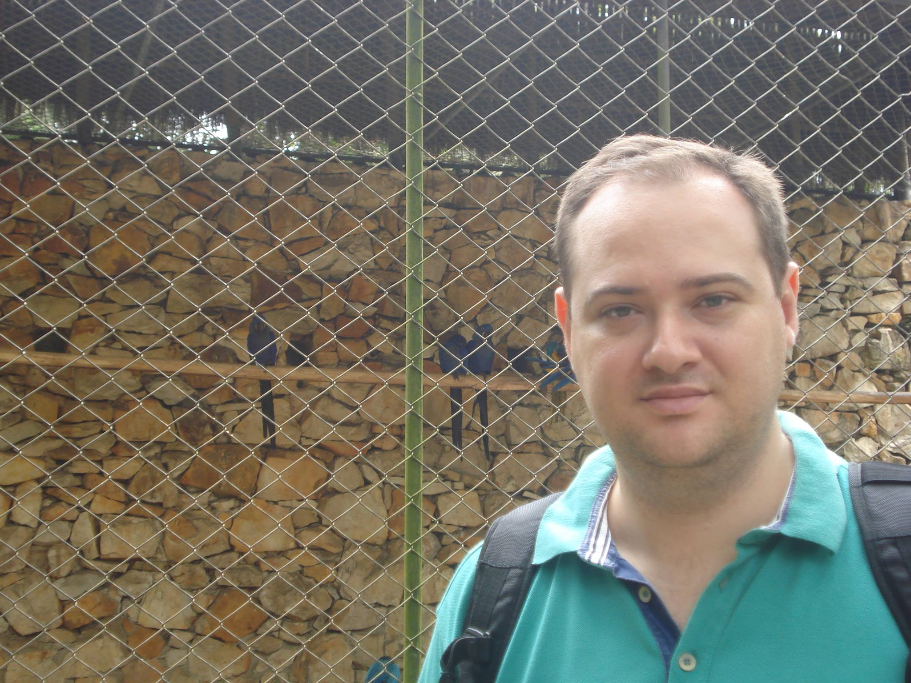
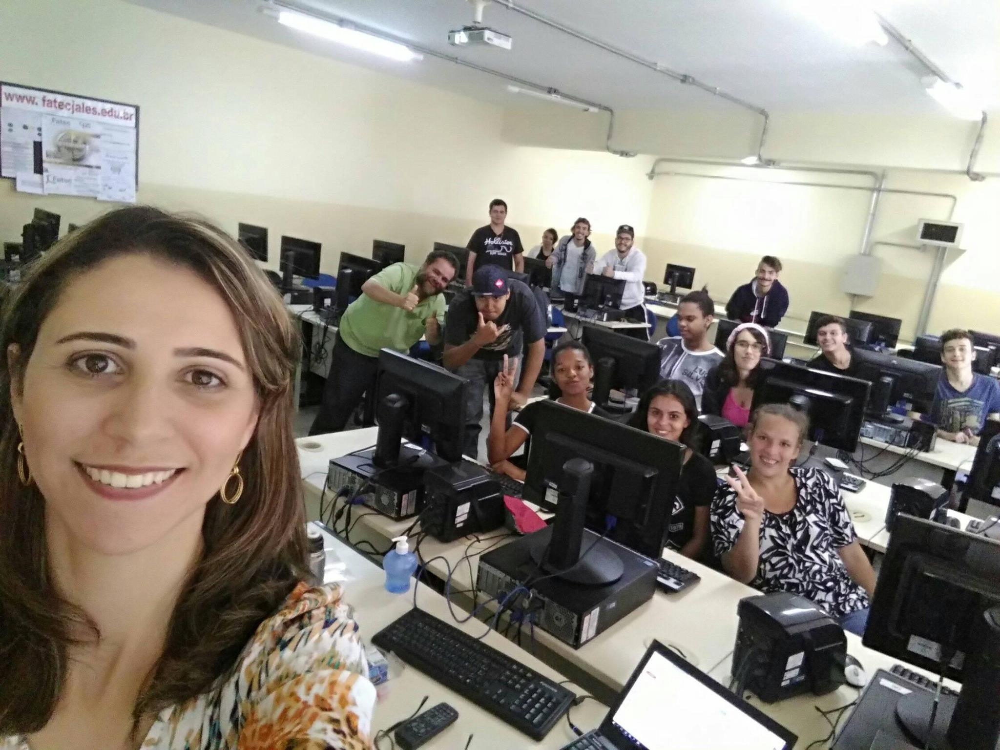
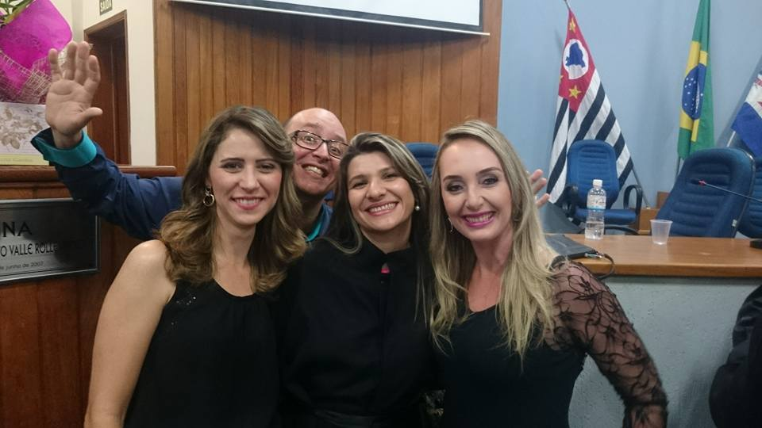

Alexandre
Mestre em Ciência da Computação na Universidade Estadual Paulista Júlio de Mesquita Filho, UNESP de São José do Rio Preto (2011). Possui graduação em Tecnologia em Processamento de Dados pela Universidade Paulista (1998), especialização em Desenvolvimento de Sistemas Sob a Tecnologia Cliente/Servidor e Internet pelo Centro Universitário de Rio Preto (2002) e formação pedagógica para docente pela Faculdade de Tecnologia de Sorocaba (2008). É Professor e Coordenador da Faculdade de Tecnologia de Jales Prof. José Camargo - FATEC e Professor da Escola Técnica de Fernandópolis - ETEC Prof. Armando José Farinazzo. Tem experiência na área de Ciência da Computação, com ênfase em Processamento de Imagens e Visão Computacional. Conhecedor das áreas de Banco de Dados, Desenvolvimento de Sites, Engenharia de Software, Algoritmos e Estrutura de Dados.
Disciplina: Padrões de Projetos de Sítios de Internet I
Apresentar os fundamentos do HTML (Hypertext Markup Language) com ênfase na semântica do uso dos elementos e nos benefícios do emprego de padrões de codificação. Demonstrar uso do CSS (Cascading Style Sheets) para separar conteúdo e apresentação, de maneira a minimizar tempo de manutenção, aumentar a velocidade do desenvolvimento e desenvolver as habilidades de design. Objetivos específicos. Os estudantes deverão ser capazes de: construir páginas Web por meio do HTML e validá-las no validador do W3C, quando for o caso. Empregar o CSS para todas as apresentações. Criar uma estrutura de diretórios adequada para sítios Internet visando a facilidade de manutenção. Saber empregar FTP para transferir arquivos para o servidor. Construir formulários de contato. Empregar um script fornecido. Criar um sítio completo com várias páginas com todos os elementos de design, HTML e CSS estudados no curso

Andrea
Possui graduação em Licenciatura em Matemática pela Universidade Estadual Paulista Júlio de Mesquita Filho(1999), mestrado em Matemática pela Universidade Estadual Paulista Júlio de Mesquita Filho(2002) e doutorado em Ciências da Computação e Matemática Computacional pela Universidade de São Paulo(2005). Atualmente é Docente da Faculdade de Tecnologia de Jales, Diretora da Faculdade de Tecnologia de Jales, Membro da Congregação da Faculdade de Tecnologia de Jales e Membro de corpo editorial do Reagro - Revista Eletrônica de Agronegócio da FATEC Jales. Tem experiência na área de Matemática. Atuando principalmente nos seguintes temas:Polinômios de Szegö, Relação de recorrência de três termos, Polinômios ortogonais no círculo unitário, Polinômios ortogonais, Zeros de polinômios. (Texto gerado automaticamente pela aplicação CVLattes)
Disciplina: Fundamentos de Matemática Elementar
Discutir os conceitos básicos de matemática. Objetivos específicos: O aluno será capaz de compreender as ferramentas básicas em matemática dos principais conteúdos do ensino básico, fundamental e médio necessários para as demais disciplinas do curso. Saber utilizar softwares e aplicativos como ferramentas auxiliares à resolução de problemas.

Selma
Toda a sua formação é direcionada à área de Letras. Possui graduação pela UNESP/Assis (Licenciatura Plena em Português, Francês e Espanhol), mestrado pela UFMS/Três Lagoas (área de concentração: Estudos Linguísticos) e, atualmente, cursa doutorado, na UFMS/Três Lagoas, na mesma área. É docente efetiva da FATEC Jales,onde ministra a disciplina de Espanhol, Português e Metodologia da Pesquisa Científica. É coautora do Livro-Texto da disciplina de Espanhol do curso de Tecnologia em Processos Gerenciais, modalidade à distância, oferecido pelo Centro Paula Souza no âmbito do Programa Univesp. Suas pesquisas são direcionadas à Linguística Aplicada e a Análise do Discurso de Linha Francesa.
Disciplina: Leitura e Produção de Textos
Ampliar o domínio da comunicação escrita e oral, por meio da aprendizagem e produção de textos existentes no âmbito acadêmico e tecnológico. Favorecer a interpretação de textos relativos à área do curso. Objetivos específicos. Produzir textos de interesse para o desenvolvimento do profissional. A disciplina de Produção de Textos me auxiliou há criar textos, relatórios, citações e curriculos. Com o conhecimento adquirido
melhorei meus textos, utilizando paráfrase e tópico frasal, com este conhecimento, elaborei o conteúdo deste site.
Artigo de Opinião
Cada vez mais estamos em contato com a tecnologia diretamente ou indiretamente, mas não são só os adultos, adolescentes ouidosos,as crianças estão nascendo neste mundo com uma interação que antes não haviamos visto, assim trazendo mais problemas para a sociedade.
Médicos, psicólogos e educadores estudaram e analisaram a interação das crianças e se mostram cada vez mais preocupados.
Médicos afirmam que essa interação causa vários problemas físicos e mentais, psicólogos mostram que as crianças adquirem uma ansiedade muito elevada, o que causa problemas mentais. Pesquisa realizada pela AVG tecnologies, entrevistou 6 mil mães e revelou que as crianças de 3 a 5 anos, só no Brasil 97% ficam online, sendo que a maioria desses, 97%, ficam 5 horas por dia usando celulares, tabletes ou computadores. Um estudo realizado pela agência de saúde pública britânica mostrou que crianças que passam muito tempo na internet no futuro podem desenvolver problemas mentais, ansiedade e agressividade, podendo também desenvolver problemas no corpo, torcicologo nos dedos, ombros e problemas na coluna.
É necessário regular essas horas que a criança fica na internet é fundamental , assim como regular o conteúdo que essa criança está em contato, como sites pornos, redes sociais, YouTube e vários outros. Assim sendo regular proibindo alguns sites e conteúdos ou regular o horário de uso, para a criança não desenvolver um problema mental ou físico, aproveitar a tecnologia para o aprendizado como sites, jogos e aplicativos pedagógicos, a tecnologia não é o problema mas sim
o seu mal uso.

Virgílio
Possui graduação em Ciência da Computação, mestrado pela Unesp - Universidade Estadual Paulista "Júlio Mesquita Filho ", através da Faculdade de Engenharia Elétrica na área de Automação, concluinte do Programa Especial de Formação Pedagógica de docentes para as disciplinas do currículo da educação profissional de nível técnico para adquirir o título de Licenciatura em Informática. Possui experiência na área de desenvolvimento web, design, marketing e gerência de projetos. Leciona como professor concursado na Escola Técnica Estadual de Ilha Solteira - SP (ETEC) lecionando nos cursos de informática em Ilha Solteira - SP.
Disciplina: Criação de Conteúdo na Web
Criar conteúdos textuais para páginas da Internet. Objetivos específicos. Descrever uma abordagem centrada no usuário para a escrita Web e comparar esta abordagem com outras práticas de escrita comuns. Reconhecer e observar métodos e etiqueta de comunicação interpessoal na utilização de email, listas de email, mensagens instantâneas, fóruns, Blogs, Wiki, Feeds, RSS, Chats, podcasts. Desenvolver e trabalhar com personas de usuário simples. Planejar um projeto de escrita simples com a definição do público-alvo e respectivo nível de leitura, descrição dos efeitos primários e secundários esperados, voz e tom adequados, lista de palavras-chave para possível inclusão no conteúdo. Retrabalhar cópia de textos impressos para uso na web. Escrever legendas eficazes para link de texto, texto alternativo, e imagem. Desenvolver marca apropriada para interface e rótulos de navegação. Marcar semanticamente páginas de conteúdo. Rever conteúdos para aumentar a clareza, refinar propósito e assegurar a coerência de voz, tom e estilo
Virgílio
Possui graduação em Ciência da Computação, mestrado pela Unesp - Universidade Estadual Paulista "Júlio Mesquita Filho ", através da Faculdade de Engenharia Elétrica na área de Automação, concluinte do Programa Especial de Formação Pedagógica de docentes para as disciplinas do currículo da educação profissional de nível técnico para adquirir o título de Licenciatura em Informática. Possui experiência na área de desenvolvimento web, design, marketing e gerência de projetos. Leciona como professor concursado na Escola Técnica Estadual de Ilha Solteira - SP (ETEC) lecionando nos cursos de informática em Ilha Solteira - SP.
Disciplina: Bases da Internet
Fornecer aos estudantes os conhecimentos básicos sobre a Internet. Quem e como a utiliza. Abordar tópicos para permitir aos estudantes desenvolverem habilidades básicas: email, blogs, navegadores, pesquisa, feeds, FTP, downloads, rich media e social media. Explorar vários métodos de comunicação na Web. Objetivos específicos. Compreender impactos e tendências trazidas pela Internet. Conhecer e interpretar a terminologia das tecnologias empregadas na Internet. Compreender o papel de governos, instituições e empresas que viabilizam a Internet tais como: W3C, NIC.br e CGI.br. Explicar o relacionamento entre computadores clientes e servidores estabelecendo as diferenças de objetivos, hardware, localização e manutenção. Ser capaz de diagramar esquemas de estruturas de redes de computadores mundiais, metropolitanas e locais (WAN, MAN, e LAN). Conhecer o uso geral dos protocolos da Internet: SMTP, FTP, IP, TCP, UDP e o modelo de referência OSI. Explicar funcionamento dos softwares de busca (search-engines). Compreender e aplicar os operadores booleanos para buscar conteúdos na Internet. Definir software como serviço. Identificar tipos de sítios Internet: sítios estáticos / dinâmicos, aplicativos, etc. Definir RSS e utilizar feed para agregar ferramentas em informações coletadas. Usar redes sociais para ampliar informações. Criar e utilizar Blog e RSS/Atom feeds. Criar um podcast. Identificar os métodos para coletar informações na Internet (tanto os legais e éticos quanto os desonestos e ilegais). Identificar métodos de proteção e de uso seguro da Internet. Diferenciar http de https. Localizar legislação aplicada a Internet principalmente a que trata de propriedade intelectual. Pesquisar tecnologias relacionadas à Internet e postar semanalmente no Blog do curso a linha do tempo da história da Internet

Fabiana
Mestranda em Ciência da Computação - Área de Concentração: Engenharia de Software e Banco de Dados - Universidade Estadual Paulista "Júlio de Mesquita Filho " - UNESP - São José do Rio Preto/SP. Possui Graduação em Tecnologia em Processamento de Dados pela Faculdade de Tecnologia da Alta Noroeste (Salesiano) de Araçatuba/SP. Especialização "Lato Sensu " em Computação pela UFSCar e Fundação Educacional de Fernandópolis. Licenciatura Plena em Informática pela Fatec Sorocaba. Professora do Curso Superior em Sistemas para Internet, com as disciplinas: Design Digital, Prática de Design e Engenharia de Software para Web e do Curso Superior em Gestão Empresarial da disciplina de Sistemas de Informação. Responsável pelos projetos "Click Melhor Idade " e Artes Gráficas da Fatec de Jales. Professora do Curso Técnico em Informática Integrado ao Ensino Médio da ETEC "Dr. José Luiz Viana Coutinho " de Jales (Centro Estadual de Educação Tecnológica Paula Souza) Experiência na área de Ciência da Computação, atuando nos seguimentos: informática, educação técnica e superior, EAD e consultoria.
Disciplina: Design Digital
Apresentar as bases do design gráfico de produção de sítios Internet com emprego de softwares. Projetar mock-ups (cenas) usando o software de design digital, em seguida implementar o projeto como um sítio Internet. Identificar os principais componentes dos softwares para design gráfico: espaço de trabalho, canvas, painéis, ferramentas e menus. Definir padrões de cores e empregá-los em esquemas de cores. Definir, descrever e empregar os elementos de artes gráficas: o ponto, a linha, a forma, a direção, o tom, a cor, a textura, a dimensão, a escala e o movimento. Projetar logos e marcas. Desenvolver um logo para própria página. Descrever e utilizar camadas. Otimizar organização de arquivos para trabalho em equipe. Conhecer e empregar os padrões de gravação de arquivos de imagem. Escolher o programa mais adequado para tratamento de imagens. Definir e criar um guia com os quatro elementos básicos de qualquer sítio (cabeçalhos, navegação, conteúdo e rodapé) com aplicação de padrões de design, esquemas de cores e fontes tipográficas. Projetar vários estados de interação e comportamento. Criar um sítio completo com várias páginas com todos os elementos de design, HTML e CSS estudados no curso. Empregar os padrões de resolução de tela e impressão e saber converter medidas aplicadas ao desenvolvimento de sítios para Internet. Calcular tamanhos seguros dos layouts dos sítios Internet.
Carlos
Possui graduação em Letras, mestre em Letras, área de concentração Estudos Linguísticos, da Universidade Federal de Mato Grosso do Sul, Campus de Três Lagoas, nível Mestrado. Atualmente é Professor Universitário do CEETEPS - FATEC – Fatec Professor José Carmargo – Fatec Jales – SP. Já atuou no ensino de Línguas na cidade de Londres, Inglaterra, onde estudou Tradução e Linguística da Língua Inglesa por três anos. Tem experiência na área de Letras, com ênfase no ensino de Língua Inglesa, Língua Inglesa: Prática Oral, Inglês Instrumental e Linguística. No ano de 2009 trabalhou com tutor on line Casa Thomas Jefferson. É fluente na Língua Inglesa.
Disciplina: Ingles
Apresentar os recursos da Língua inglesa objetivando desenvolver as quatro habilidades, reading, listening, writing e speaking. Apoiar as atividades de construção de blogs e sítios Internet previstas para o semestre. Os estudantes deverão ser capazes de: apresentar-se, dar informações pessoais e profissionais; entender números em contextos diversos; fazer perguntas simples e responder sobre vida cotidiana e comunicação empresarial, tais como escrita de e-mails e atender uma ligação telefônica; extrair informações de textos técnicos específicos da área; entender diferenças básicas de pronúncia.

Ligia
Possui Graduação em Processamento de Dados pela Universidade Paulista (1999). Pós-Graduação Lato Sensu em Informática na área de concentração em Desenvolvimento de Sistemas sob a Tecnologia Cliente/Servidor e Internet pelo Centro Universitário de Rio Preto (2001). Licenciatura Plena em Informática pelo Programa Especial de Formação Pedagógica de Docentes para as Disciplinas do Currículo da Educação Profissional de Nível Médio do Centro Estadual de Educação Tecnológica Paula Souza (2008). Pós-Graduação Stricto Sensu (Mestrado) em Engenharia Elétrica na área de concentração em Automação pela Universidade Estadual Paulista Júlio de Mesquita Filho (2011). Pós-Graduação Stricto Sensu (Doutorado) em Engenharia Elétrica na área de concentração em Automação pela Universidade Estadual Paulista Júlio de Mesquita Filho (2016). Atualmente é docente do Centro Estadual de Educação Tecnológica Paula Souza (CEETEPS) na Faculdade de Tecnologia de Jales "Professor José Camargo ". Tem experiência na área de Ciência da Computação, com ênfase em desenvolvimento de sistemas, atuando principalmente nos seguintes temas: programação, banco de dados, redes e automação.
Disciplina: Algoritmos e Lógica de Programação
Iniciar a formação em programação de computadores por meio de uma linguagem facilitadora do aprendizado de algoritmos , preferencialmente alguma uma linguagem de amplo emprego no mercado. Desenvolver as habilidades básicas de programação de computadores aplicando os conceitos estudados.
Aprendido em Aula!
O while é a estrutura de repetição mais simples do PHP. Com ele informamos que um bloco de código deve ser repetido enquanto a condição declarada for verdadeira. Do-While o loop do-while tem comportamento parecido com o while, diferenciando-se somente na validação do loop, que é feita no final de cada iteração. Assim como no comando while o for repete o bloco comandos enquanto a condição se manter verdadeira. A parte de inicialização é realizada apenas 1 vez, no início da execução do comando. A seguir, a condição é testada, e caso verdadeira, os comandos são executados. Após a execução dos comandos mas antes de testar a condição, a parte incremento do comando for é executada. O for é basicamente uma forma compacta de escrever um loop típico usando while. Uma estrutura de decisão examina uma ou mais condições e decide quais instruções serão executadas dependendo se a condição foi ou não foi. O comando if é uma estrutura de decisão muito utilizada. O comando switch case em C É uma forma de reduzir a complexidade de vários if … else encadeados. É muito utilizado, principalmente para uso em estruturas de menu. O conteúdo de uma variável é comparado com um valor constante, e caso a comparação seja verdadeira, um determinado comando é executado.